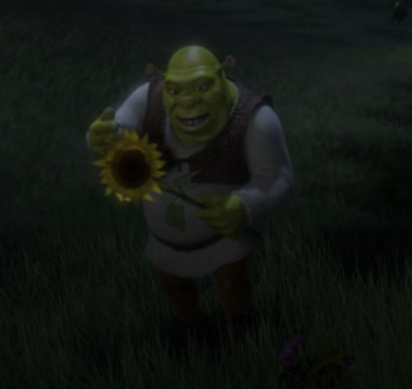
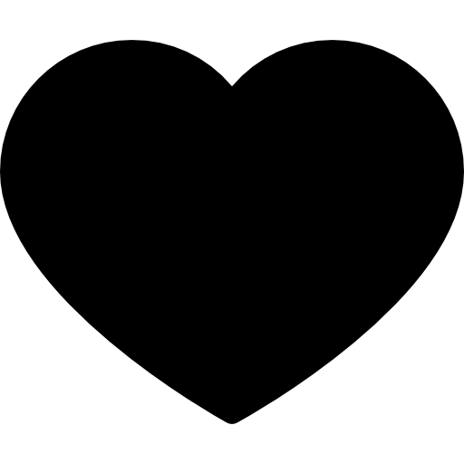
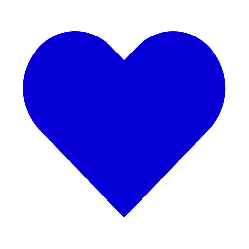
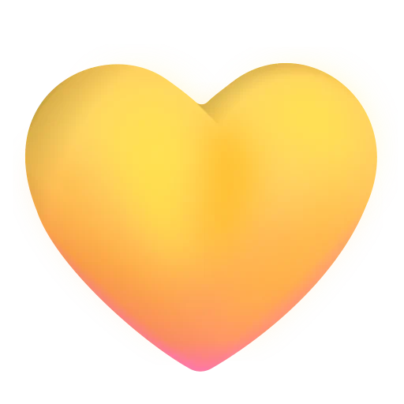
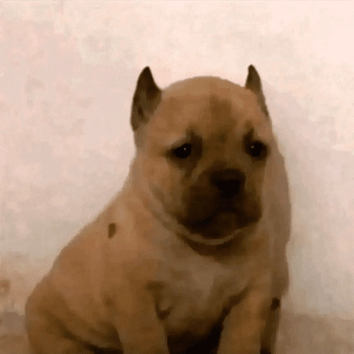

Hace ya dos meses nos vimos por segunda vez, y aunque quizás no sea tanto tiempo, me alegra mucho que nuestros caminos se hayan cruzado.
En este tiempo he podido conocerte un poquito más, descubrir tu forma de ser y darme cuenta de lo especial que eres para mí. Poco a poco te has convertido en alguien que me saca sonrisas y que hace que tenga ganas de seguir hablando contigo, incluso cuando no hay nada en especial que contar.

Sé que todavía nos queda mucho por conocer el uno del otro, y justamente eso me gusta. Me ilusiona pensar en todas las conversaciones, risas y momentos bonitos que todavía podríamos compartir.
No sé qué nos tenga preparado el futuro, ni quiero apresurar las cosas. Simplemente quiero disfrutar contigo y hacer todo lo que podamos hacer.
HECHO CON MUCHO CARIÑO
Unas flores para ti 🌷
Aunque ande misio, no quería dejarte sin tus flores mensuales cada 14.



Gracias por darme la oportunidad de pasar tiempo contigo, de conocerte y de quererte cada día un poquito más.
Parece que fue ayer cuando fuimos a tomar al parque, pero ya pasaron 61 días. En tan poquito tiempo te has convertido en alguien muy especial para mí.
No puedo esperar para seguir haciendo cosas contigo: viajar, salir a comer y pasear por más lugares (aguántame a que tenga chamba).
También quiero seguir disfrutando de nuestros planes: ver películas o series, comer cevichito o Inkachips tomandonos unos traguitos.
Me encanta compartir esos momentos contigo, incluso cuando me pegas o me muerdes.
Perdóname si a veces no me comporto como esperas.
De verdad intento mejorar y aprender cada día,
porque me importas mucho
y quiero que te sientas
bien conmigo.
Espero que últimamente te
estés sintiendo tan feliz
como yo.
— Jesús
